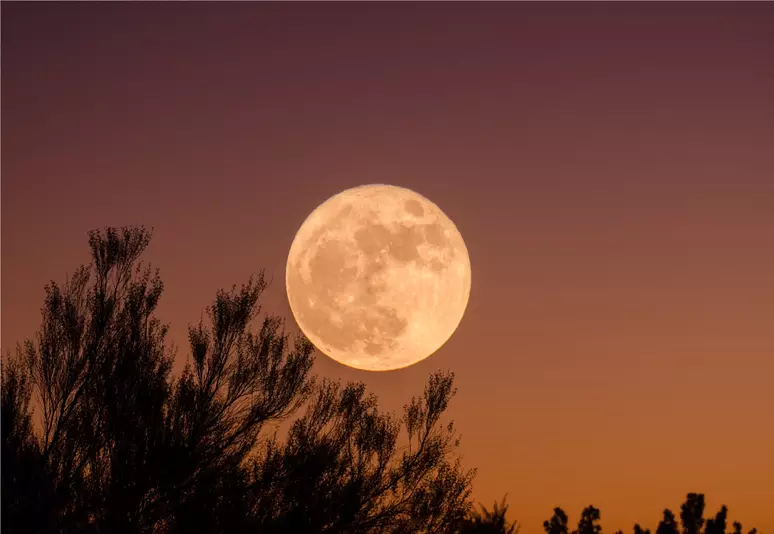

Document

Super lua do Esturjão iluminou o céu noturno no dia 1° de agosto
O que é a lua?
Lua é um corpo celeste localizado no Sistema Solar, mais precisamente nas proximidades da Terra, sendo o único satélite natural desse planeta.
Ela possui quatro fases e é objeto de estudos científicos diversos, tendo também uma relação muita próxima com a Terra, influenciando a esfera terrestre por meio do seu campo gravitacional.
Este site tem como objetivo trazer informações sobre a lua e suas fases.